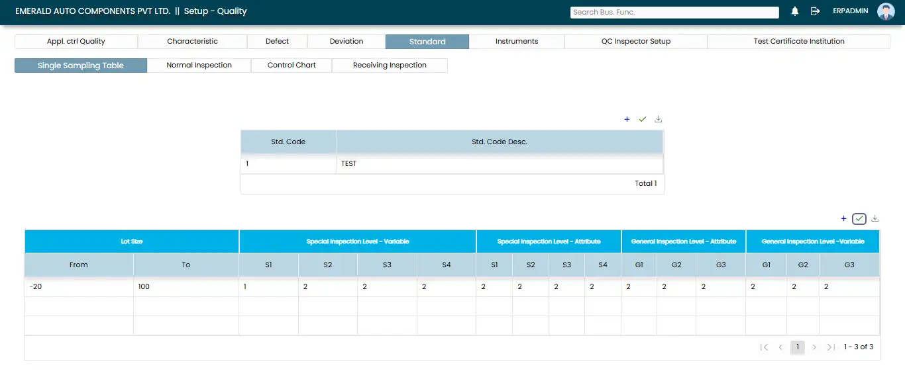

<div data-category="Quality control Management" data-title="Single Sampling Table" data-updated="December 01, 2025" data-contributors="RoadmapIT" data-breadcrumb="Home,Quality control Management,Single Sampling Table">
  <div class="page-content">
    <p>
      The standard Inspection controls can be defined in the following screen. The standard Inspection control can be added, edited, and deleted as follows.
    </p>

    <h5>Navigation Path:</h5>
    <p class="fs-6">Quality Control \ Setup \ Setup – Quality</p>
    
    <!-- Single Sampling Table -->
    <h2>Single Sampling Table:</h2>
    <ul style="list-style-type: none; align-content: center">
      <li class="mouse-icon">Select the STD Codes.</li>
      <li class="mouse-icon">Enter the Inspection Level.</li>
      <li class="mouse-icon">Select the Variable and Attribute.</li>
    </ul>
  </div>
</div>